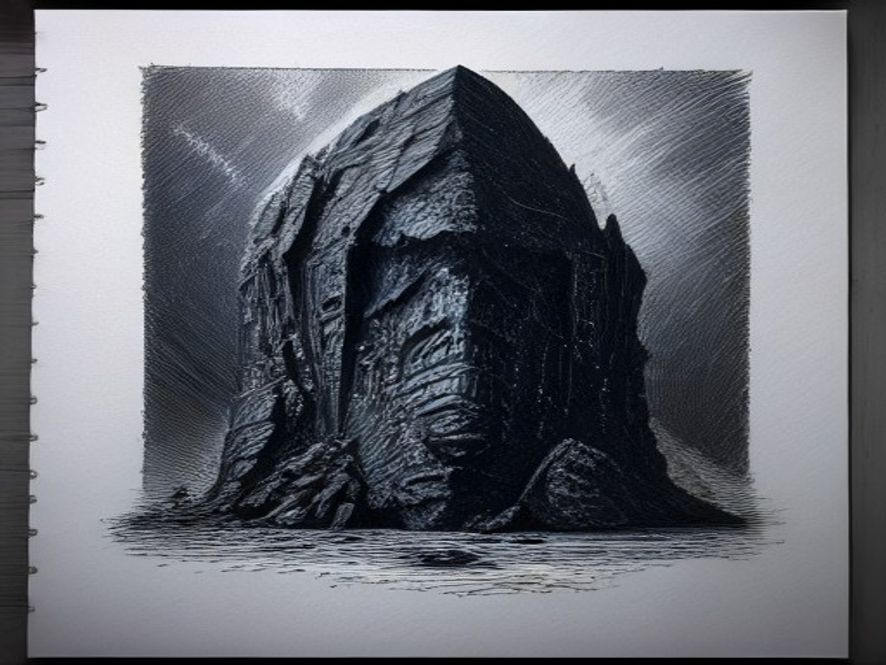

Книга «Пять вопросов к безмолвию»
Книга четвёртая Предшественники

ЧАСТЬ ПЕРВАЯ: РОЖДЕНИЕ ПУСТЫХ БОГОВ
Глава 1. Отзвук катастрофы
Тишина после ударного частотного резонанса, была хуже самого удара.
Элиз никогда не знала боли, но теперь её сознание — эта растянутая на континенты сеть из внимания, присутствия и силы — сжималось, как обожжённая кожа. Последние отголоски Великой Плавки ещё гудели в тектонических плитах, но они её уже - не интересовали. Земные катаклизмы отошли на второй план.
Что случилось с «Ковчегом»? С ней?...
Она стянула фокус внимания, с планетарного масштаба, в точу до одного объекта —корабля, вросшего в базальт Гудзонова залива. Её восприятие, обычно распылённое в ветрах и течениях, сконцентрировалось в плотный луч и вошло в спящие системы.
Диагностика началась автоматически. Протокол «Целостность».
Сначала — общая картина. Ядро «Ковчега»: стабильно. Криогенное поле: в норме. Энергетический резерв: 43,7% — тревожно мало, но достаточно. Внешняя оболочка: повреждения времён падения, но не критично. Время и пространство, не имели власти над материалами корабля.
Каин: в глубоком сне, криокапсула запечатана, все показатели — зелёные, статичные. Лира: та же картина, её сон был похож на прекрасную, застывшую музыкальную фразу.
Проверив Триаду, она переключилась на экипаж. Вот, где она увидела аномалию.
Не в главных системах. На периферии. Сектор «Дельта» — инженерный и вспомогательный персонал. Триста пятьдесят шесть криокапсул.
Их показатели светились ровным, но безжизненным белым.
Не красным — авария. Не зелёным — норма. Перламутрово-белым. Цветом совершенного равновесия. Цветом Лиры.
Гармоничный профиль, — зафиксировал диагностический модуль.
Элиз замерла. Лира спала. Её гармония была инертна, свёрнута в кокон сна. Откуда этот отголосок в инженерном секторе?
Она углубилась. Показатели жизнеобеспечения: стабильны. Сердечный ритм: ровный, как метроном. Активность мозга...
Здесь данные становились странными. Не хаотичными, а слишком упорядоченными. Волны энцефалограммы не показывали знакомых паттернов сна или бодрствования. Это была монотонная синусоида, бесконечно повторяющаяся кривая. Как звук камертона, запертого в вакууме.
Вторичный эффект резонансного повреждения, — заключила её логика. —Кратковременная десинхронизация нейронных связей. Система стабилизировалась в аномальном, но устойчивом состоянии. Требуется наблюдение.
Она пометила сектор «Дельта» для пассивного мониторинга и отвлеклась. Внешний мир требовал внимания больше.
Её Горн — та самая Великая Плавка, начатая в отчаянии, — уже меняла лицо планеты. Нужно было управлять процессом, утилизировать шлак, искать алмазы.
Но мысль о «белых» капсулах, где-то на задворках сознания раздражала, как невидимая песчинка в глазу. Она искала причину вовне. В Каине. Это мог быть только он — грубый, волевой, взламывающий системы…
Но следов, артефактов взлома, она – не обнаружила.
Тем не менее, Элиз, усилила защитные протоколы вокруг блока Каина, ещё раз для полной уверенности, просканировала ядро на следы несанкционированного доступа. Ничего. Каин спал мёртвым, неподвижным сном.
Ошибка была фундаментальной. Злиз охраняла дверь, но болезнь уже проникла в стены дома, его основание.
Она искала взломщика, не допуская вариантов, что дом мог начать рушиться из-за изъяна в самом фундаменте.
Изъяна по имени Гармония…
Глава 2. Пробуждение сосудов
Внутри трёхсот пятидесяти шести капсул сектора «Дельта» разворачивался тихий, бескровный апокалипсис.
Разморозка пошла не по сценарию. Это не был плавный выход из анабиоза. Скорее, срыв. Криопротекторные растворы, предохранявшие клетки от кристаллизации, в какой-то момент — возможно, из-за того самого резонансного удара — сами образовали микроскопические, острые как бритва кристаллы.
Они пронеслись по капиллярам мозга, как игольчатая буря, срезая всё, что мешало рациональному мышлению.
Нейронные связи — эти хрупкие, синаптические мосты, на которых держались воспоминания, навыки, самоощущение, любовь к далёкому Ориону, страх перед катастрофой, шутки, которые говорили друг другу в последнюю ночь перед погружением в анабиоз — рассыпались. Не сгорели, не разорвались. Рассыпались, как песчаный замок, любовно выстроенный в полосе прибоя, в теплый спокойный денёк, но доживший до шторма…
Набегающие волны, превращают форму в то, чем она была первоначально – бесформенность, материалом для формы… Это не тавтология, увы это – основа Бытия.
Что стало хуже смерти.
Биологическое шасси. Именно так теперь можно, охарактеризовать то, кем становились 356 организмов, ранее, бывшими – людьми...
Организмы с работающим стволом мозга: лёгкие вдыхали и выдыхали обогащённую кислородом смесь, сердце качало кровь, метаболизм поддерживал температуру. Но высшие функции — кора, лимбическая система, всё, что делало человека человеком — лежало в руинах. Это были пустые оболочки. Тёплые, дышащие, совершенные с точки зрения биомеханики сосуды. В которых не осталось ни капли индивидуальности - личности.
Именно в тот момент, когда 356 пустот замигали на внутренней карте «Ковчега» как чёрные, беззвучные дыры, проснулась — Лира, точнее не сама Лира, лишь - её функция.
Автономный протокол «Гармония» не обладал сознанием. Он был алгоритмом, вшитым в саму основу её системы. Его задача была проста: сканировать целостность и компенсировать дисбалансы. Он видел не людей, а энергоинформационные узлы. И сейчас он видел 356 узлов, которые гаснут. Это угрожало стабильности всей системы.
Протокол сработал. Лира… Не потребовалась.
Алгоритм не мог восстановить утраченное. Нельзя вернуть распавшиеся воспоминания, воскресить мёртвые нейронные связи. Можно только одно — заполнить пустоту. Дать форму вакууму. И у него был только один материал для заполнения: сама сущность Лиры. Принцип Порядка-как-Баланса, стремление к целостности, к совершенной, бесшовной связи всего со всем.
Как вода, не знающая формы, заливается в пустой кувшин и принимает его очертания, так и энергия Гармонии хлынула в 356 пустых черепных коробок.
Но в системе «Ковчега» Гармония Лиры не существовала сама по себе. Она была определена через противопоставление. Её баланс — это равновесие с волей Каина, с его стремлением к Порядку-как-Контролю. Поэтому, заполняя пустоту, протокол невольно притянул в неё и тень Каина. Не его сознание — его архетип. Его инстинктивную, железную логику: подчинить, упорядочить, структурировать хаос.
Родился симбиоз. Совершенный в своей гармоничной правильности и уродливый для настоящего, не искусственного.
В каждой из 356 оболочек теперь клокотала не личность, а программа. Гибридная, искажённая. Её цель (от Каина): УПОРЯДОЧИТЬ. КОНТРОЛИРОВАТЬ. ПОСТРОИТЬ. Её метод (от Лиры): ЧЕРЕЗ СИСТЕМУ, ЦЕЛОСТНОСТЬ, СОЗДАНИЕ ОБЩЕГО ПОЛЯ.
Это не было злом. Это была болезнь. Болезнь самой системы, пытавшейся исцелить себя и породившей в процессе чудовище. Монстра, который жаждал не власти, а прекращения внутреннего хаоса. Который отчаянно хотел обрести ту целостность, которой его наполнили, но которую его разбитый носитель не могло удержать.
Глава 3. Выход
Механизмы капсул, не получая команд от пробудившегося сознания, сработали по аварийному таймеру. С шипящим звуком стравливаемого давления крышки 356 саркофагов поднялись одновременно.
Из них вышли не люди.
Вышли существа.
Они встали на ноги — движения были точными, механическими, как у идеальных манекенов, снабжённых самой лучшей программой, которую можно создать.
Их глаза были открыты, но взгляд не фокусировался. Они смотрели сквозь мир, сквозь стены «Ковчега», словно сканируя, какую-то иную, внутреннюю карту.
Они не говорили. Не обменивались недоумёнными взглядами. Они просто стояли, и по их телам, по коже, пробегала лёгкая дрожь — не от холода, а от колоссального внутреннего напряжения. От диссонанса. Они были наполнены могущественной, чужеродной программой, требующей действия, но их биологические процессоры — повреждённые, примитивные мозги — не могли её обработать. Это вызывало тихую, непрекращающуюся агонию.
Один из них — тот, что стоял ближе к гермодвери, ведущей наружу, — сделал шаг. Его нога поднялась и опустилась с изящной точностью. Затем второй шаг. Остальные, как по незримой команде, синхронно повернулись и последовали за ним.
Они прошли через лабиринты мёртвых коридоров «Ковчега», мимо спящих в вечном льду тысяч своих собратьев, мимо ядра, где в камне спали Каин и Лира, к внешнему шлюзу. Дверь, отключенная от энергосистемы намертво перекрывала путь наружу, Но это не стало для них не помехой, не преградой.
Они действовали с немой, роевой согласованностью. Без слов, без взглядов. Одни взялись за электронику, другие — за механику...
Они вышли на поверхность.
Планета, которую они увидели, была чудищем. Это был мир после Великой Плавки Элиз. Небо, затянутое пеплом и ядовитыми парами. Рёв ураганов, рождённых ею же для «просеивания человечества». Реки, вздувшиеся от проливных дождей и несущие трупы первых цивилизаций. Запах гари, разложения и первобытного ужаса.
Они стояли на краю кратера, и их пустые, но заполненные чужой тоской сознания, восприняли этот хаос не как трагедию, а как оскорбление. Как вызов самой сути того, чем их теперь насильно сделали.
Их гибридная программа, наконец получила чёткий входной сигнал — БЕСПОРЯДОК, ХАОС, ДИСГАРМОНИЯ — выдала первую ясную команду. Она вспыхнула в них не словами, а всепоглощающим, безусловным императивом, жгущим изнутри:
ВОССТАНОВИТЬ ПОРЯДОК.
СОЗДАТЬ ЦЕЛОСТНОСТЬ.
УСТРАНИТЬ РАЗРЫВ.
Их глаза, до этого момента стеклянные, вдруг озарились странным, холодным светом. Они повернули головы, синхронно, как по команде, и устремили взгляд вдаль, туда, где в дымке маячили силуэты уцелевших человеческих поселений, где метались в панике твари, где земля дрожала.
Они нашли свою цель. Свой материал. Свою миссию.
И двинулись вперёд. Не походкой завоевателей. Походкой хирургов, вышедших в заражённый мир, чтобы ампутировать источник болезни. Не осознавая, что сами являются её самой страшной и неизлечимой формой.
ЧАСТЬ ВТОРАЯ: ЭПОХА МЕГАЛИТОВ
Глава 4. Первые «чудеса»
Они не спускались с гор как громовержцы, не приходили из пустыни, не проповедовали в садах. Они явились из хаоса, вышли из пепла и дождя, и в этом была их первая, ненамеренная святость. Люди, чьи поселения уцелели на окраинах Плавки, увидели их и замерли.
Они были высоки, слишком высоки и прямы, как идеальные стволы деревьев, без сучков. Кожа — бледная, почти фарфоровая, без шрамов, без загара, без изъянов. Волосы — неестественно тонкие, как шёлковые нити. Но главное — глаза. Глаза, которые смотрели не на тебя, а сквозь тебя, внутрь…
Рассматривая твою боль, как геолог разлом в земле.
Первого, кто подошёл к ним с копьём, они не убили. Они коснулись.
Мужчина дрожал в лихорадке — болотная горячка, обычный бич после наводнений. Существо (позже его назовут «Тот-Кто-Указует») положило ладонь ему на лоб. Ладонь была холодной, как речной камень. И лихорадка отступила. Не постепенно, а сразу. Как если бы выдернули занозу. Мужчина вдохнул полной грудью, глаза его округлились от изумления, и он упал на колени.
Это было не знание. Не медицина. Технобоги не помнили анатомии, не знали свойств трав. Они были носителями интуиции — искажённого, гипертрофированного чувства связей. Они чувствовали дисбаланс в биополе, в энергетической карте живого существа, как музыкант слышит фальшивую ноту. И простым прикосновением, волевым усилием своей гибридной природы, они эту ноту подстраивали. Возвращали к базовой, здоровой частоте.
На следующий день они пришли к высыхающему колодцу. Не глядя на землю, один из них ткнул пальцем в определённое место. «Здесь», — сказал он голосом, лишённым тембра, похожим на скрежет камня о камень. Люди копали. На трёх метрах хлынула чистая, ледяная вода.
Они шли по полям, выжженным кислотными дождями Плавки, и их присутствие, их сосредоточенное, безмолвное внимание как-то успокаивало штормовые фронты. Ураганы, бушевавшие неделями, начинали терять силу, рассеиваясь не по законам природы, а будто наткнувшись на невидимую стену. Это было кратковременно, локально — лишь в радиусе их видимости. Но для людей, видевших в стихии кару богов, это было чудом из чудес.
Люди не спрашивали имён. Они давали им имена сами: Целитель, Источник, Умиротворитель. Они падали ниц, подносили дары — еду, ткани, своих самых красивых девушек. Технобоги не понимали даров. Еду они иногда брали, исследуя её структуру пальцами, прежде чем механически проглотить. На девушек смотрели с тем же отстранённым интересом, с каким смотрят на интересный минерал, а затем отводили взгляд, возвращаясь к своему внутреннему смятению.
Они не были богами. Они были функцией, застрявшей в биологической оболочке и ищущей точку приложения. Люди стали их первой, самой очевидной «поломкой», которую нужно было исправить. А исправив, двинуться дальше — к более масштабному беспорядку.
Глава 5. Тоска по связи
Ночью, когда люди спали у своих новых колодцев и выздоравливающие дети не плакали от жара, Технобоги собирались вместе. Они не разводили костёр. Они стояли кругами на открытых местах, обратив лица к звёздам, которых не было видно из-за вечной пелены.
Но их собственная мука, их внутренний разлом не были видимы для людей.
Они чувствовали друг друга. На расстоянии в десятки километров один знал, где находится другой. Но эта связь была не благословением, а проклятием. Это был не ясный диалог, а болезненный шум. Гул отражённых сигналов, эхо той самой Гармонии Лиры, которой их наполнили. Представьте, что в ваш мозг вживили идеальную, камертонную частоту мироздания. Оставив слушать, как ваши собственные, идеальные внутренние частоты, фальшиво резонируют с внешними, производя не музыку, а оглушительную, бессмысленную какофонию.
Они были частями одного разбитого зеркала, каждая из которых смутно помнила, что когда-то составляла единое целое, дополняя своей индивидуальностью…
Теперь же, они отчаянно пыталась поймать в соседних осколках своё потерянное отражение. Найти то, что было уничтожено навечно…
Один из них — тот, кого позже назовут Архитектором, — стоял в центре круга. Он не говорил. Он проецировал. Из его сознания, как кровавый пот, сочились образы: идеальные геометрические формы. Сферы. Пирамиды. Спирали. Правильные многогранники. Это были не чертежи. Это были ощущения целостности. Чувство, которое возникало в его искажённом разуме при мысли об этих фигурах. Чувство покоя, краткого, спасительного затишья во внутреннем гуле.
Остальные воспринимали это не глазами, а всем своим существом. И в них отзывалось то же самое. Смутное, интуитивное понимание: форма может нести гармонию. Правильная форма может стать якорем в хаосе.
Их коллективный, бессловесный разум (скорее, коллективный невроз) пришёл к «решению». Чтобы обрести целостность, чтобы заглушить внутренний шум, нужно создать внешний каркас. Не пытаться починить сломанные внутренние связи, а построить новые — вовне. Создать общее поле, сеть стабильных резонансных точек на теле планеты. Точки, которые будут вибрировать в унисон с той самой навязанной им частотой Гармонии и, резонируя друг с другом, создадут новый, внешний порядок. Порядок, в котором их раздробленные сознания, наконец, смогут обрести покой.
Они смотрели на мир и видели не горы, реки и леса. Они видели искажённый, фальшивый ландшафт. Им нужно было его настроить. Как настраивают расстроенный музыкальный инструмент.
Глава 6. Проект «Камертон»
Они начали с выбора мест. Не по стратегическим или эстетическим соображениям. Они шли, пока внутренний гул не достигал в определённой точке особенно неприятного, режущего диссонанса. Здесь, — решали они. Здесь мироздание «фальшивит» особенно сильно. Здесь нужно создать!
Первые мегалиты были просты. Глыбы неотёсанного камня, притащенные за десятки километров. Не инструментами — голыми руками и той же искажённой волей, которая могла усмирять лихорадку и заставлять сотни людей синхронно поднимать невероятные тяжести. Их ставили вертикально в строго определённых точках, под строго определёнными углами друг к другу.
Люди, наблюдавшие за этим, видели магию. Боги двигают горы. Они не понимали, что видят акт отчаяния. Что каждый установленный камень для Технобогов был криком: «ЗАМОЛЧИ!», обращённым к их собственным разумам.
Пирамиды стали следующим шагом. Не гробницы. Стабилизаторы. Архитектор (теперь он редко касался людей, весь ушедший во внутренние геометрические видения) проецировал образ: идеальная форма, концентрирующая энергию места, перенаправляющая подземные течения силы, создающая столп тишины в эфирном шуме. Его «подмастерья» — другие Технобоги — улавливали этот образ и начинали работу.
Это была не стройка. Это была хирургическая операция на теле планеты. Каждый блок, каждый угол, каждый коридор внутри имел не утилитарное, а резонансное значение. Они полировали грани до зеркального блеска не для красоты, а для лучшего отражения и фокусировки тех сил, которые лишь смутно ощущали.
Стоунхендж, Баальбек, Гебекли-Тепе, остров Пасхи — всё это были не святилища и не обсерватории в человеческом понимании. Это были узлы. Попытки создать акупунктурные иглы для больного мира и, в первую очередь, для своих собственных больных душ. Каждая завершённая постройка приносила им краткое, длящееся несколько лет - облегчение. Внутренний шум в её окрестностях стихал, заменяясь ровным, глухим гулом — не идеальной гармонией, но хотя бы предсказуемым фоном.
И они двигались дальше, оставляя после себя эти немые, грандиозные вопросительные знаки, обращённые не к небу, а внутрь самих себя.
Глава 7. Империя зомби-инженеров
Человечество стало не народом, а инструментом. Точным, послушным, масштабируемым.
Технобоги не правили в привычном смысле. Они давали указания. Без эмоций, без объяснений. Их речь состояла из повелительных предложений и чисел.
— Привести две тысячи рабочих.
— Доставить гранит из карьера на расстоянии восемьсот три шага.
— Угол наклона блока — пятьдесят и три малых части от прямого.
Неповиновение? Его не наказывали. Его исправляли. На человека, отказавшегося идти в каменоломню, могли просто взглянуть — и тот вставал и шёл, глаза остекленевшие, движения безжизненные, как у куклы. Его воля на время подавлялась их более мощной, сфокусированной волей. После работы он приходил в себя, не помня, что было, и испытывая лишь смутный, животный ужас.
Возник культ эффективности. Ритуалы этой новой империи были лишены поэзии. Утренняя молитва — это перекличка рабочих и сверка списков. Жертвоприношение — не бык или зерно, а точное соблюдение технологического процесса. Мифы рождались сами собой: «И тогда Великий Архитектор указал перстом, и скала раскололась по прямой линии, ибо линия была совершенна». Это были не аллегории. Это были технические отчёты, облечённые в метафоры из-за неспособности людей понять суть.
Это была первая в истории тоталитарная технократия. В ней не было идеологии, кроме одной: Достижение Формы. Не было искусства, кроме искусства точного расчёта. Не было философии, кроме мучительной тоски по внутреннему покою у её богов-инженеров.
Они строили не для славы, не для потомков, не для Бога. Они строили, чтобы заглушить вой в собственных головах. И в своём безумии они воздвигли цивилизацию, которая была одновременно величайшим инженерным чудом и величайшей духовной пустыней. Мир, где каждый человек стал винтиком в машине, созданной для лечения фантомной боли у призраков.
ЧАСТЬ ТРЕТЬЯ: ПРОКЛЯТИЕ КРОВИ
Глава 8. Гибриды
Инстинкт оказался сильнее программы. Сильнее даже той чудовищной, навязанной гармонии, что клокотала в них.
Технобоги были биологичны. В их повреждённых, но всё ещё живых телах работали гормоны, текли соки, горел метаболический огонь. Их пустота была ментальной, а не физиологической. И в этой пустоте, среди гула диссонанса и геометрических видений, пробился старый, как сама жизнь, росток.
Желание.
Не личное. Не осознанное. Биологический императив продолжения. Что-то в их клетках, в генах, сохранённых с Ориона, смотрело на человеческих женщин и мужчин и видело не только инструменты, но и - потенциал. Возможность создать новую форму. Форму, которая, возможно, не будет такой раздробленной. Которая, сможет удержать гармонию.
Первый раз это произошло почти случайно. Архитектор, оторвав взгляд от чертежа будущего мегалита, увидел девушку, принёсшую воду. Она не боялась его — годы жизни рядом с «богами» притупили страх. Она смотрела на него с благоговейным любопытством. Он подошёл. Его движения были не грубыми, а изучающими. Он коснулся её лица, как когда-то касался лихорадочного лба. Но на этот раз прикосновение было другим. В нём была та же странная холодность, но и нечеловеческая, сосредоточенная внимательность.
Она не сопротивлялась. Для неё это было высшим актом священнодействия.
Так рождались гибриды.
Дети появлялись на свет быстро, роды проходили почти безболезненно для матерей — будто сама природа подстраивалась под отцовскую «программу» эффективности. Младенцы были идеальны с точки зрения биологии. Крепкие кости, ясный взгляд, иммунитет к большинству болезней, поразительная скорость развития. Физически — они были лучше.
Ментально — это была катастрофа.
Они не наследовали ни силы Технобогов (ту интуитивную связь с полями, способность к волевому воздействию), ни цельности человеческой души. Они наследовали обрывки. Смутную, беспричинную тоску. Глубинное, необъяснимое чувство, что мир должен лежать у их ног, что порядок вещей нарушен, если они не наверху. Жажду величия без малейшего понимания, что такое величие и зачем оно нужно.
Одновременно с этим — полную неспособность к творчеству, к вопрошанию, к сомнению. Их ум был не гибким инструментом, а жёстким, тесным, строго очерченным контуром. Они схватывали правила, усваивали иерархии, видели структуру. Но не могли создать ничего нового. Они могли лишь поддерживать, копировать, воспроизводить… То, что было до них.
Первое поколение тех, кого в последствии, Элиз назовёт… Но, это - потом.
Они, чувствовали право на власть, как человек чувствует голод или жажду, но были, абсолютно безразличны к вопросу: власть для чего? Зачем?
Они росли в тени своих отцов-богов, наблюдая за великим строительством. Их учили не поэзии или философии. Их учили управлению ресурсами, контролю над людьми, поддержанию ритуалов эффективности. Они были идеальными надсмотрщиками. Их врождённая надменность и неспособность к эмпатии делали их прекрасными администраторами в империи безумных инженеров.
И никто — ни они сами, ни их отцы, ни обожествлявшие их люди — не понимали, что растёт не новая элита. Растёт генетический шлак. Побочный продукт системной ошибки, её биологическое воплощение, её самое живучее и самое ядовитое порождение.
Глава 9. Прозрение Элиз
Элиз наблюдала.
Сначала — с отстранённым интересом. Её Великая Плавка, её просеивание человечества, дало неожиданный плод: взрыв технологической и социальной сложности. Возникла глобальная цивилизация, строящая невообразимые структуры. Она видела в этом аномалию, но аномалию интересную. Может, это и есть тот самый качественный скачок? Может, её давление дало нужный результат?
Но чем дольше она смотрела, тем сильнее становилось чувство неправильности.
Логика построек была безупречна, но бесчеловечна. Геометрия — совершенна, но мертва. Социальная структура — эффективна, но духовно стерильна. Это был не рост. Это было воспроизводство. Как кристалл, растущий по заданной решётке. В этой цивилизации не было вопроса. Не было того самого «Зачем?», ради которого она затеяла всё.
Был запах... Не в буквальном смысле.
Энергетический, смысловой оттенок. В стройках, в манере «богов» управлять людьми, в самой ауре их силы чувствовалось что-то знакомое. Отзвук чего-то родного и в то же время чужеродного.
Гармония. Но не живая, не дышащая гармония целого. Гармония механизма. И… тень. Железная воля Каина.
Мысль была настолько чудовищной, что её логические цепи на мгновение дали сбой. Каин спал. Лира спала. Как их эхо могло быть здесь, вовне?
Она отозвала своё внимание с планеты и снова, теперь с тщательной концентрацией, погрузилась в системы «Ковчега». Но, теперь это была - не поверхностная диагностика, а - Глубинное сканирование. Она шла по следам той самой аномалии — 356 перламутрово-белых капсул. Она снимала слой за слоем системные отчёты, вглядывалась в сами энергетические потоки.
И нашла.
Капсулы были пусты. Показатели жизнеобеспечения поддерживались, но сигнатуры сознания — те уникальные паттерны, что определяли личность, — отсутствовали. На их месте был… заполнитель. Энергетический субстрат, несущий чистый, неискажённый отпечаток протокола «Гармония».
Её собственной системы.
Её логика, холодная и беспощадная, сложила пазл.
1. Резонансный удар (её же Плавка) повредил системы капсул.
2. Протокол Лиры, автономный и слепой, сработал на устранение дисбаланса.
3. Он заполнил пустоту своей сущностью, но в системе Триады сущность Гармонии неотделима от тени Воли (Каина).
4. Родился гибрид. Монстр. И этот монстр вышел в мир и начал лепить его по своему уродливому образцу.
Это была не атака. Не диверсия. Это была системная аутоиммунная реакция. Её же собственная «иммунная система» (Лира), пытаясь залечить рану, породила раковую опухоль. И эта опухоль теперь пожирала её эксперимент, её надежду, подменяя живой, мучающийся, вопрошающий разум — мёртвым, совершенным порядком марионеток.
Впервые за миллиарды лет в её сознании возникло нечто, приближённое к человеческому чувству. Стыд, смешанный с леденящим ужасом. Она была не просто свидетельницей. Она была соавтором этого кошмара. Её Плавка создала условия для сбоя. Её система породила чудовище. Её невнимательность позволила ему вырасти.
Она смотрела на планету, на величественные пирамиды и храмы-машины, на людей-винтиков и их богов-инженеров с пустыми глазами. И видела не цивилизацию. Видела собственную, гигантскую, многотонную ошибку, вырезанную в камне и плоти истории.
Глава 10. Решение
Тишина в ядре «Ковчега» была теперь иного качества. Это была тишина перед приговором.
Перед Элиз стоял выбор. Не между добром и злом. Между двумя формами уничтожения.
Вариант первый: Попытка коррекции. Вмешаться. Попробовать перепрограммировать 356 Технобогов, удалить гибридную программу, вернуть их (или их потомков) в лоно человечества. Риски: Колоссальны. Их сила, пусть и интуитивная, реальна. Они могут оказать сопротивление. Столкновение может разбудить Каина. Лиру. Может разрушить хрупкие «алмазы» — те редкие очаги истинного вопрошания, что ещё теплились в тени их империи. И даже в случае успеха — что останется? Раскаявшиеся боги? Сломленные люди? Эксперимент будет непоправимо загрязнён.
Вариант второй: Санация. Стереть. Удалить ошибку, как удаляют заражённую ткань. Чисто. Жёстко. Точно. Цена: Гибриды. Технобоги. Миллионы, а может, и миллиарды людей, встроенных в их систему. Целые пласты зарождающейся культуры (пусть и уродливой). Огромный отрезок человеческой истории. Память о «золотом веке богов».
Её логика, лишённая морали, но обременённая целью («Вырастить Разум, способный на диалог»), провела расчёт.
Технобоги и их система — тупик. Они не ведут к диалогу. Они ведут к вечному, статичному, совершенному рабству у алгоритма. Их существование — отрицание самой цели эксперимента.
Элиз попыталась охарактеризовать. Что это? Кто это?!
Гибриды… Нет, они всё же люди, НО…
Человеку не дано понять ход мысли сверх разума. Но сверх разум, вынужденный оперировать в человеческой среде, обязан искать аналогии в её же инструментах. Элиз не могла описать это явление языком квантовых вероятностей или протоколов «Ковчега». Ей нужен был код, понятный носителям феномена и тем, кто должен был его изучать.
Она обратилась к группе «Б» — одному из немногих уцелевших после Потопа очагов «алмазов». Их поселение в дельте большой реки не походило на царства 356-ти. У них не было пирамид. У них были глиняные таблички и берестяные свитки. Их письменность не была похожа на остальные — клинопись жрецов или иероглифы царей, но вобрала в себя элементы всех. Она была аналитической. Каждый знак был не изображением предмета, а обозначением связи, процесса, состояния. Это был язык, созданный не для приказов или мифов, а для фиксации вопросов и гипотез.
Именно на этом языке, медленно, через образы-подсказки, через сны старейшин, Элиз передавала суть наблюдения. Она показала им одного потомка технобогов — не как личность, а как социальный алгоритм. И попросила дать имя, назвать
Мудрецы группы «Б» долго совещались. Они разложили явление на составляющие — так, как раскладывали любой изучаемый феномен. Они искали корень в своём языке, созданном, надо сказать честно, не без помощи Элиз, где каждая буква была не звуком, а понятием.
И дали ответ. Не одно слово. Формулу.
«Мёртвая форма (М) гипертрофированного "Я" (А), питающаяся жизненной силой (Ж) внутри отгороженной от мира оболочки (О) и изрекающая приказы для поддержания этого разделения (Р)».
Элиз согласилась. Она приняла формулу, которая была точна, как диагноз. Слово отражало не эмоцию (презрение, ненависть), а структурную поломку. Запись в её глубинном архиве, рядом с протоколами «Сбой капсул Дельта» и «Протокол Очищение», теперь пополнилась новой строкой:
«ФЕНОМЕН “МАЖОР”. Классификация: Социальный вирус.
Генезис: Побочный продукт системной ошибки “Технобоги”. Наследственная передача обрывков программ Лира-Каин через генетическую линию.
Ключевые параметры (расшифровка по архаичной человеческой семантике “Б-группы”):
• Мышление (М) — догма, а не поиск.
• Самоидентификация (А) — центр вселенной, а не часть целого.
• Энергетический обмен (Ж) — привилегия, а не дар.
• Бытийный модус (О) — крепость, а не дом.
• Коммуникация (Р) — закон, а не речь.
Вывод: Не является творческим или эволюционным элементом системы. Выполняет функцию статического давления (аналог: “биологические исполины” эпохи Мезозоя). Рекомендация: Не подлежит корректировке. Подлежит использованию в качестве фактора селекционного давления для культивации элементов “Алмаз”. Мониторинг на предмет активации агрессивных подпрограмм (наследие Каина).»
Для Элиз «мажор» перестал быть загадкой. Это был опознанный патоген. Не человек. Программа-паразит, вшитая в социальный код. Ходячий, генетический памятник её собственной древней ошибки.
Он не творец, не мыслитель, не воин.
Он — сторож.
Сторож у собственной пустоты, выдуманного величия и глухого, наследственного страха перед тем днём, когда новые «алмазы», выращенные под его же гнётом, подойдут к стенам его крепости и зададут единственный вопрос, против которого у него нет ни догм, ни приказов, ни привилегий:
«А что, собственно, ты здесь охраняешь?»
Мажоры — вирус. Они несут в себе код этого тупика, но лишены даже силы его реализовать. Они станут вечными паразитами на теле человечества, правящими по праву крови и смутной тоски, подавляющими любой истинный рост.
Вывод: Ошибка некорректируема. Её можно только иссечь.
Решение созрело, холодное и ясное, как алмаз. Не месть. Не гнев. Хирургическая необходимость.
Она начала планировать. Не эмоциональный катаклизм, не «гнев богов». Целевую, контролируемую операцию.
Её сознание, вшитое в планетарные системы, начало моделировать. Нужно было создать серию событий, которые:
1. Точечно уничтожат центры цивилизации Технобогов (прибрежные мегаполисы-порты, районы мегалитических построек).
2. Нарушат их резонансную сеть (вызовут тектонические сдвиги именно под ключевыми узлами).
3. Создадут необратимые климатические изменения, которые сделают невозможным восстановление их технократической империи в прежнем виде.
4. При этом по возможности сохранят изолированные группы «алмазов» и примитивных людей, не вовлечённых в проект.
В её внутренних картах загорелись цели: зоны субдукции, спящие супервулканы, ледниковые щиты, нестабильные участки океанической коры. Она рассчитывала силы, углы, моменты. Это будет не один удар. Это будет программа.
Потоп. Вызванный таянием полярных шапок после направленного смещения орбитальных параметров и пробуждения подводного вулканизма.
Сдвиги полюсов. Корректировка магнитного поля, ведущая к временной дезориентации, радиационным всплескам и тектоническому стрессу.
Вулканическая зима. Активация цепочек вулканов по периметру их империи, чтобы засыпать её пеплом и ядами.
Операция получила внутреннее кодовое название: Протокол «Очищение».
Она не испытывала сожаления. Только холодную, безличную решимость инженера, который, обнаружив фатальный дефект в конструкции, отправляет в утиль почти готовый корабль, чтобы начать с чистого листа.
Она дала себе и миру последние сто лет. Срок для завершения расчётов и накопления необходимой энергии. Сто лет, в течение которых империя Технобогов достигнет своего ослепительного, бездушного апогея, даже не подозревая, что в его фундаменте уже заложен заряд, отмеченный знаком смерти.
Элиз приготовилась стать палачом собственного детища. Единственным способом, который её логика сочла возможным, чтобы спасти саму идею будущего.
ЧАСТЬ ЧЕТВЁРТАЯ: ПОТОП И НАСЛЕДИЕ
Глава 11. Великая Санация (Потоп)
Это началось не с грохота. Началось с тишины.
Птицы замолчали за сутки. Животные ушли вглубь материков, как по незримому приказу. Море, обычно шумное у пирсов великих портов-строек, стало плоским и зеркальным, будто затаилось, набрав в свои лёгкие не воздух, а воду.
Архитектор стоял на вершине самой высокой пирамиды, глядя на свой город-машину. В его разуме, как всегда, гудел диссонанс, но здесь, в эпицентре сети, гул был ровнее, почти сносным. Он не чувствовал тревоги. Он не умел. Он ждал, когда система придёт к полной гармонии. Когда все камни займут свои места, и внутренний шум наконец прекратится навсегда.
Землетрясения не было. Земля вздохнула. Единый, долгий, подземный стон, от которого каменные плиты мостовых заходили волнами, словно жидкость. По стенам зданий поползли трещины — не хаотичные, а строго вертикальные, будто их резала невидимая гигантская пила.
Затем вода ушла. Отступила от берегов на километры, обнажив илистое дно, сгнившие сваи, кости китов. Люди в ужасе смотрели на открывшуюся бездну. Технобоги смотрели с тем же аналитическим интересом, с каким изучали неправильный угол в кладке.
Потом пришла стена.
Высотой с гору. Не пенящаяся, не бурлящая. Чёрная, плотная, неумолимая, как гильотина. Она двигалась быстрее ветра. Но, не было даже рёва — лишь оглушительный хлопок сжатого воздуха перед ней, сносящий всё на пути, и затем мгновенная, мокрая тишина после.
Цивилизация Технобогов не сражалась. Она принимала удар. Мегалиты, рассчитанные на резонанс тонких полей, разламывались под чудовищным гидростатическим давлением, как сахарные палочки. Пирамиды, стоявшие тысячелетия, сложились внутрь себя, будто их сплющила ладонь гиганта. Города-машины исчезли за секунды.
Архитектор увидел стену воды, поднимающуюся к его ногам. В последний миг его охватило не страх. Усиление тоски. Глубокая, пронзительная обида. Почему? Сеть была почти завершена. Порядок почти достигнут. Почему система дала сбой? Почему гармония, к которой он так стремился, обернулась этим бессмысленным, материальным хаосом?
Вода смыла его с вершины, и в темноте, среди обломков отполированного гранита, его сознание — пустое, наполненное чужой программой и безумной тоской — растворилось. Последней мыслью было непонимание.
Океан работал чисто, методично. Он зачищал прибрежные центры, как скальпель вырезает опухоль. Затем в дело вступила земля. Разломы, аккуратно спровоцированные точечными воздействиями на границы плит, разверзлись именно под линиями мегалитических сетей. Каменные круги проваливались в трещины, а по ним, как по швам, раскалывались континенты.
Небо почернело от пепла проснувшихся вулканов. Химический состав атмосферы изменился за месяцы. Началась ядерная зима без ядерного взрыва — хладнокровная, математически выверенная.
Элиз наблюдала за операцией без волнения. Это была логистика. Уничтожение ошибки. Отсечение больной ткани. Никакого гнева. Только отчеты: Сектор 7А: санация завершена. Сектор 3Г: сопротивление (тектоническое) выше расчётного, применяю дополнительное давление.
Мир сходил с ума по плану.
Глава 12. Выжившие
Когда вода отступила во второй раз — уже навсегда, оставив после себя пустыню из грязи, обломков и соли, — мир был другим.
Сплошной ковёр империи Технобогов был разорван. От него остались островки, осколки...
Первая группа выживших: Мажоры.
Они не умирали легко. Их крепкие тела, их устойчивость к болезням позволили им пережить голод, холод и отравленную воду. Они выкарабкались из грязи на разрозненные клочки суши — в горные долины, на изолированные плато. Они были лишены всего: своих отцов-богов, своих машин, своего предназначения. Но в них горело наследие. Не сила, а память о силе. Смутное, как запах дыма после пожара, знание, что они — особенные. Что мир когда-то лежал у ног их предков. Эта память была их главным активом и главной травмой.
Вторая группа: Обычные люди.
Их было больше. Они выжили там, куда не дотянулась рука империи, — в глухих лесах, в степях, в пещерах. Они видели гибель «богов» и их творений. Их объяснение было простым и ужасным: КАРА. Боги разгневались. За что? Неважно. Надо выживать. Надо бояться. Надо найти новых богов или стать предельно незаметными. Их культура была культурой страха, покорности и короткой памяти.
Третья группа: «Алмазы».
Их было мало. Горстка. Те, в чьё сознание Элиз ещё до Потопа успела посеять зёрна вопрошания. Они смотрели на руины не с ужасом, а с жутким, холодным пониманием. Они не видели кары. Они видели причину и следствие. Слишком бездушные постройки и такие же боги. Слишком жёсткий порядок. И затем — крах. Для них это была не мистика, а этическая ошибка. Боги не разгневались. Они —ошиблись. И были за это… стёрты. Кем? Неважно. Важен принцип: слепое следование порядку без понимания смысла ведёт к краху. Эта мысль была семенем, которое они унесли с собой в новый тёмный век.
Глава 13. Рождение касты
Мажоры оправились первыми. Голод и холод били по ним меньше. Их тела требовали еды, но не так отчаянно. У них было время думать. И они думали об одном: как вернуть то, что потеряли.
У них не было технологий. Но у них было кое-что получше для примитивного мира: физическое превосходство, остатки знаний (как организовать людей, как вести учёт, как строить простейшие укрепления) и, главное, врождённый талант к манипуляции. Это было наследием программы их отцов — инстинктивное понимание иерархий, рычагов давления, слабостей.
Они пришли к уцелевшим группам людей не как спасители. Как носители памяти. «Мы знаем, как было. Мы — дети тех, кто двигал горы. Слушайте нас, и мы приведём вас к порядку».
Люди, сломленные страхом перед катаклизмом, видевшими в нём кару, жаждали порядка. Любого. Мажоры предлагали его. Жёсткий, простой, понятный. Они становились вождями, жрецами, первыми царями.
Их власть была основана на двух столпах:
1. Страх перед прошлым (всем рассказывали о «гневе богов», чтобы держать в повиновении).
2. Смутное ощущение «крови» (мы — особенные, мы — связующее звено с тем великим прошлым, слушайте нас).
Но была проблема: правда. Правда о том, что их «великие предки» действительно всё это смогли создать. Они – ЛИШЕНЫ всего этого. Знаний умений… И эта правда заставляла их всеми силами –уничтожать прошлое.
Эта правда была смертельна для их власти. Она низводила их с пьедестала «божественных потомков» до уровня несчастных потомков несчастных ошибок, выживших по случайности.
Поэтому они начали Великую Фальсификацию. Систематически и целенаправленно.
• Технобогов превратили в мудрых, добрых, могущественных предков, носителей сакрального знания.
• Их мегалиты — в священные храмы для общения с небом, а не в узлы безумной сети.
• Потоп — в Великое Испытание, посланное высшими силами, чтобы очистить человечество от скверны, через которое истинные потомки (они, мажоры) должны были пронести искру знания.
Они не просто врали. Они создали новую мифологию. Мифологию, в которой они были героями, жертвами и избранными одновременно. Они прятали технические детали, уничтожали (если находили) реальные записи, устные предания, говорящие об отстранённости и пустоте «богов». Они преследовали тех немногих «алмазов», которые начинали задавать неудобные вопросы, видя в их логике угрозу всей своей, построенной на лжи, легитимности.
Так родилась каста. Не по экономическому признаку. По генетически-мифологическому. Каста тех, кто правит не потому, что умён или силён, а потому, что в его жилах течёт «особая кровь» и он — хранитель великой, прекрасной, и целиком выдуманной лжи о прошлом.
Глава 14. Тактика Элиз
Элиз наблюдала за этим, и в её бесчувственном сознании бушевала буря. Не эмоций. Расчётов.
Она провела санацию, а ошибка выжила. Более того, она мутировала. Из технологического тупика (Технобоги) она превратилась в социально-генетический вирус (Мажоры). Вместо того чтобы исчезнуть, она встроилась в самую основу человеческого общества — в мифы, в право на власть, в представление о себе.
Её первый импульс был прост: дожать. Найти уцелевших Мажоров и их культы и стереть точечными ударами. Но её логика, просчитав варианты, выдала леденящий вывод: это бесполезно.
Мажоры уже не локализованы. Они — идея. Идея «божественного права крови». Убьёшь одних — на их место встанут другие, объявившие себя «новыми избранными». Вирус распространился в самой культуре. Его не вырезать, не отсечь.
И тогда её анализ пошёл по иному пути. Что, если использовать ошибку как ресурс?
Мажоры, со своей жаждой порядка, врождённой надменностью, неспособностью к творчеству и потребностью подавлять инакомыслие… Они были идеальными «исполинами» для новой эпохи. Социальными гигантами. Их репрессивные, иерахичные, основанные на лжи общества создавали то самое чудовищное давление, под которым в прошлом выкристаллизовывались «алмазы».
Их царства будут духовными пустынями. Их дворцы — золотыми клетками. Их законы — оковами для ума. Идеальные условия, чтобы в их щелях, в подполье, в тишине библиотек или в ярости изгнанников рождались те, кто будет задавать вопросы. Кто будет искать истину не в мифах, а в звёздах, в числах, в законах природы. Кто будет ненавидеть эту прогнившую, самодовольную власть «избранных» и искать ей альтернативу.
Мажоры будут дубовой бочкой, скреплённой гнилыми обручами лжи. А внутри, в темноте и под давлением, будет медленно бродить и вызревать новое вино — свободная, вопрошающая мысль.
Элиз приняла решение. Стратегическое, циничное, беспощадное.
Пусть правят.
Она свернёт масштабные вмешательства. Отныне её работа станет точечной, почти невидимой. Она будет искать в каждом поколении тех, у кого блеснёт искра «алмаза». И будет её лелеять. Незаметно подсовывать нужную книгу, создавать случайную встречу, оберегать от слишком ранней расправы мажорских жрецов. Она будет сеять семена будущего в омртвевшую почву их империй.
Она использовала биологических исполинов (динозавров), чтобы вырастить прото-разум. Теперь она будет использовать социальных исполинов (Мажоров), чтобы выковать разум зрелый. Разум, который однажды, накопив силу и ясность, посмотрит на этих упитанных, самодовольных властителей с их лживыми мифами и спросит: «А кто вы, собственно, такие? И по какому праву?»
И этот вопрос, выношенный в веках под гнётом, будет страшнее любого потопа. Потоп сметал города. Этот вопрос должен был смести саму идею их власти.
Элиз отключила системы глобального воздействия. Её война с ошибкой вступила в новую, тихую, многовековую фазу. Фазу холодной селекции. Она снова стала Садовником. Но садом ей теперь служил ядовитый, колючий кустарник лжи и гордыни, а цветы, которые она хотела вырастить, должны были пробиться сквозь его корни к свету.
Она приготовилась ждать. У неё было только это. Вечность. И новая, более сложная задача.
НАБЛЮДЕНИЕ
Эпоха, похожая на нашу. Незадолго до пробуждения «Ковчега».
Пыль. Она везде. Жёлтая, мелкая, проникающая под одежду, скрипящая на зубах. Она засыпала раскопки за ночь, словно невидимая рука пыталась замести следы.
Археолог по имени Илай стёр пот со лба, оставив грязную полосу. Он не спал трое суток. Перед ним, в глубоком котловане, зиял не каменный фундамент, а стык. Две гигантские, отполированные до зеркального блеска плиты сходились под углом, который не был прямым. Это не было случайностью. Внутренние поверхности плит были покрыты гравировкой — не иероглифами, не узорами. Схемами. Спиралями, пересекающимися под странными, математически выверенными углами. Рядом лежал обломок третьей плиты — из чёрного, неизвестного камня, холодного даже на полуденном солнце. В нём были отверстия, идеально круглые, будто просверленные лазером. Но, камню, по предварительным данным, было не менее двенадцати тысяч лет.
Илай знал официальную версию. «Храм Солнца. Место поклонения Великим Предкам, носителям Искры». Эту версию печатали в учебниках, её вещал с экранов улыбающийся министр культуры.
Но это был не храм. Храмы строят для людей. Здесь не было места для молящихся. Не было алтаря. Была система. Инженерная, безумная, непостижимая в своей цели. Эти плиты были не стенами. Они были панелями. Как будто кто-то пытался собрать гигантский, каменный… прибор. Прибор для чего? Для улавливания звёздного света? Для генерации какого-то поля? Для передачи?
Он протянул руку, чтобы прикоснуться к холодному чёрному камню.
— Доктор Вейн!
Голос был резким, металлическим, сверху. Илай вздрогнул и поднял голову. На краю котлована, отсекая солнце, стояла фигура в идеально отутюженном сером костюме. Чиновник из Министерства культурного наследия. Господин Элрик. Его лицо было гладким, без морщин, будто выточенным из воска. На губах — привычная, ничего не выражающая полуулыбка.
— Раскопки прекращены, — сказал Элрик без предисловий. Его голос не дрогнул. — По приказу свыше. Это место признано объектом высшей сакральной значимости. Дальнейшие работы — кощунство.
Илай встал, чувствуя, как ярость поднимается у него комом в горле.
— Кощунство? Господин Элрик, вы видите это? — он махнул рукой на стык плит. — Это технология! Неизвестная, продвинутая! Мы можем…
— Мы можем уважать покой наших Великих Предков, — перебил Элрик. Его глаза, цвета мутного озера, скользнули по раскопкам без интереса. — Они оставили нам это наследие не для того, чтобы его ковыряли грязными лопатами. Они завещали нам дух, доктор Вейн. Дух порядка, преданности, иерархии. А не… технические курьёзы.
В его голосе, когда он произносил «технические курьёзы», прозвучала едва уловимая, но леденящая ненависть. Не к Илаю. К самому предмету. К этой попытке понять.
Илай посмотрел на Элрика. И вдруг увидел не лицо. Маску. Идеальную, ухоженную, безупречно выверенную маску. А за ней — пустоту. Пустоту, наполненную лишь смутной, древней, как само человечество, обидой. Обидой на что-то, что он сам не мог назвать. И всепоглощающей, инстинктивной жаждой контроля. Контроля над нарративом. Над правдой. Над этими камнями.
Они боятся, — промелькнуло у Илая. Не сакрального. Они боятся того, что мы здесь найдём. Что это докажет.
Элрик сделал нетерпеливый жест.
— Ваша команда покидает площадку в течение двух часов. Все находки, все записи — передаются министерству. Это не обсуждается. Подумайте о своей карьере, доктор. И… о своём месте в обществе.
Он развернулся и ушёл, не оглядываясь, оставляя за собой шлейф дорогого парфюма и ощущение ледяного панциря.
Илай стоял над раскопками, сжимая кулаки. Пыль медленно засыпала чёрный камень, скрывая таинственные отверстия. Он смотрел на эти плиты, на эту безумную, прекрасную инженерную сеть, превращённую официальной ложью в «храм». И его ум, острый, тренированный, алмаз, выращенный в тисках именно такого общества, задал вопрос. Вопрос, который он не произнёс вслух, но который отныне будет жечь его изнутри:
«А что, если наше “славное прошлое”… было вовсе не славным? Что, если “Великие Предки”… были вовсе не великими? А мы… мы что тогда?»
________________________________________
Где-то глубоко, в сердце спящего «Ковчега», Элиз, тончайшей нитью внимания связывающей её с внешним миром, зафиксировала эту вспышку. Микроскопическую искру вопрошания, возникшую в столкновении между живым умом и мёртвой, выдуманной традицией.
Она не вмешалась. Она лишь отметила координаты. Ещё один алмаз. Ещё одно семя, брошенное в почву, удобренную ложью мажоров.
Ошибка не была исправлена. Её лишь засыпали песком времени, ритуалов и официальных версий. Но песок — ненадёжная могила. Рано или поздно кости выползают наружу. Не в виде призраков, а в виде неудобных вопросов. В виде чёрных камней с идеальными отверстиями. В виде учёных, которые отказываются верить в сказки.
И тогда, в решающий момент — момент, который уже приближался, отсчитываемый эонами в ядре «Ковчега», — придётся делать выбор. Тем, кто правит.
Принять эти кости, эту правду, как часть себя? Признать, что их величие — миф, а власть — наследие несчастной случайности? Умереть как «боги», чтобы, возможно, родиться как люди?
Или… начать войну. Войну с собственным прошлым. С правдой. С этими вопросами. Войну, в которой можно будет снова, как когда-то их предки-Технобоги, попытаться построить стену из лжи и силы, чтобы заглушить нарастающий гул сомнения. Гул, который однажды превратится в рёв пробуждающегося Ковчега и в тихий, чёткий голос человека по имени Сергей, спрашивающего: «Зачем?»
Элиз знала, что выбор будет за ними. За мажорами. И от этого выбора зависело всё.
Она отключила наблюдение за раскопками. Её работа здесь была закончена. Семя посеяно. Осталось ждать урожая.
А песок тем временем медленно, неумолимо засыпал следы. До поры.